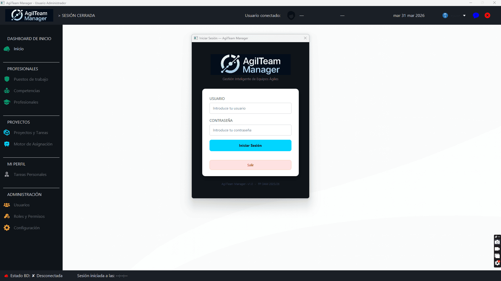
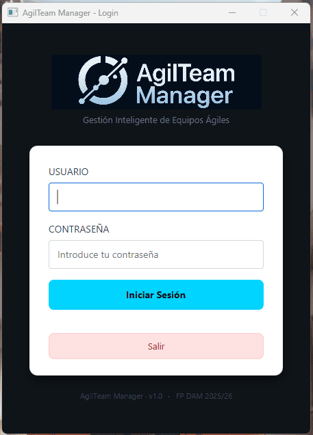
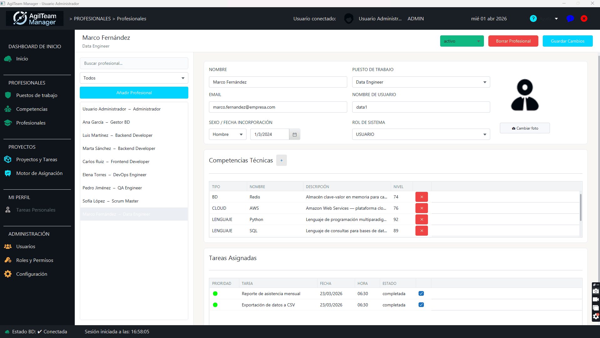
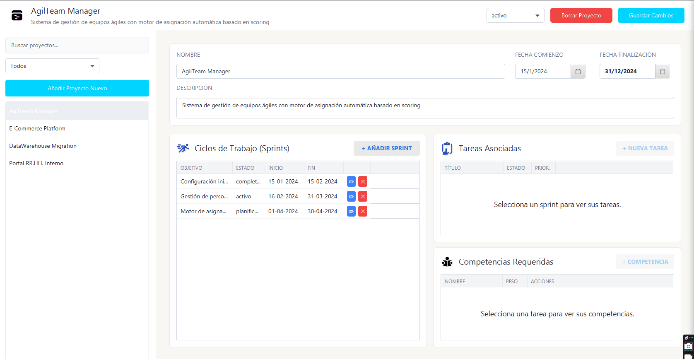
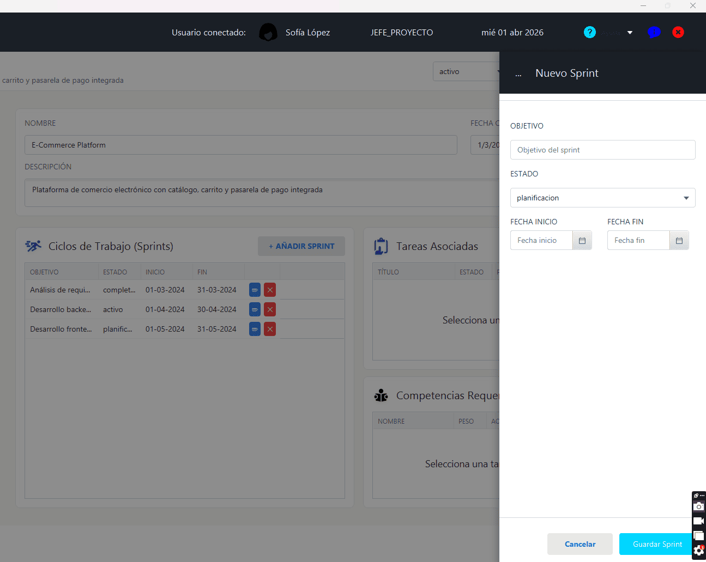
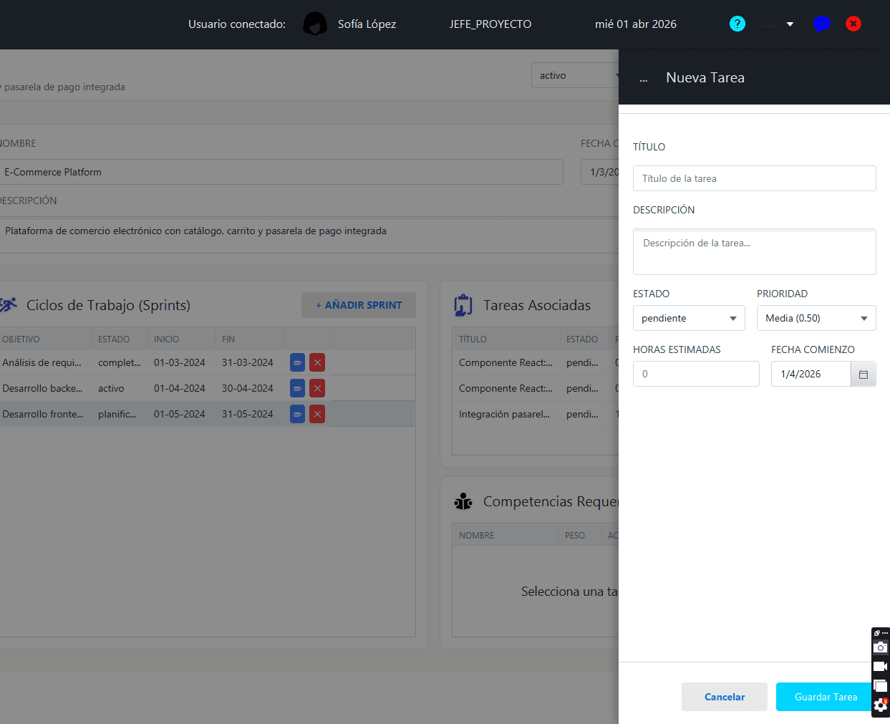
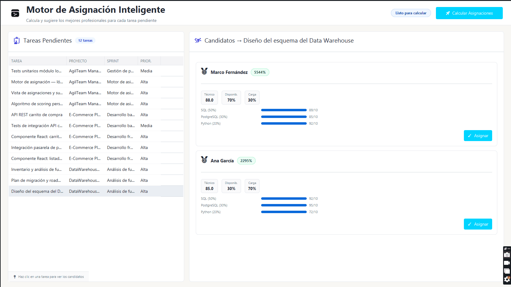

AgilTeam Manager es una aplicación de escritorio para la gestión integral
de equipos de desarrollo ágil. Permite organizar personas, proyectos, sprints y tareas,
y cuenta con un motor inteligente de asignación que sugiere la persona
más adecuada para cada tarea en función de sus competencias técnicas, disponibilidad
y carga de trabajo actual.
La aplicación está diseñada para tres perfiles de usuario: Administrador,
Jefe de Proyecto y Usuario. Cada perfil tiene acceso
a distintas funcionalidades según sus responsabilidades.

📷 captura01.png — Vista general de la aplicación al iniciar sesión
Introduce tu usuario y contraseña en los campos correspondientes.
2
Pulsa Iniciar sesión o presiona Enter.
3
La aplicación cargará el panel principal adaptado a tu rol.

📷 captura02.png — Pantalla de login con usuario y contraseña
Pantalla de inicio de sesión
Si no recuerdas tu contraseña, contacta con el administrador del sistema.
No existe recuperación automática de contraseña por email.
La primera vez que accedas a la aplicación, es posible hacerlo usando los usuarios
que ya se encuentran dados de alta para pruebas o bien usando el usuario admin con
contraseña 1234. Idealmente se debe crear un usuario nuevo para cada profesional y cambiar
las contraseñas por defecto por una contraseña segura.
El menú lateral de navegación se adapta según el rol del usuario que ha iniciado sesión.
Por defecto, al iniciar la primera vez la aplicación se generan tres roles:
Administrador, Jefe de Proyecto y Usuario.
Cada uno de ellos tendrá acceso a las opciones que se muestran en la siguiente tabla:
Desde el menú lateral Personas puedes gestionar el equipo:
añadir nuevos miembros, editar su información y asignarles competencias técnicas.
Añadir una persona
1
Ve a Personas → Gestión de personas.
2
Pulsa el botón Nueva persona.
3
Rellena los campos: nombre, apellidos, email, disponibilidad (0–100%) y puesto.
Todos los campos marcados con * son obligatorios.
4
Pulsa Guardar. La persona aparecerá en la lista.

📷 captura03.png — Lista de personas del equipo con opciones de edición
Vista de gestión de personas
Asignar competencias técnicas
Selecciona una persona en la lista y pulsa Editar competencias.
Puedes añadir competencias del catálogo (Java, Python, Docker, etc.) con un nivel
de dominio del 0 al 100. Estas competencias son el factor principal que usa el
motor de asignación para hacer sus sugerencias.
Tareas Asignadas
En la tabla inferior se muestran las tareas asignadas a la persona.
En esta tabla los jefes de proyecto pueden cambiar el estado de la tarea marcandola
como completada.
Desde el menú lateral Proyectos, Sprints y Tareas puedes gestionar los proyectos, sprints y tareas del equipo.
Haciendo click sobre cualquier de ellos se muestra la información correspondiente.
La aplicación usa un marco de trabajo ágil para la gestión de proyectos, que lleva a separarlo en
fases temporales o sprints. A su vez, dentro de cada sprint se gestionan las tareas que se deben realizar.
A esta metodología se la conoce como SCRUM y es una de las más utilizadas en el mercado.
Crear un proyecto
1
Ve a Proyectos → Nuevo proyecto.
2
Introduce el nombre, descripción y fechas de inicio y fin.
3
Pulsa Guardar Cambios para generar el proyecto.
Ahora podemos continuar añadiendo sprints y tareas.

📷 captura05.png — Lista de proyectos con sus estados y sprints
Vista de gestión de proyectos
Añadir sprints a un proyecto
Con el proyecto seleccionado, localiza la tabla Sprints y pulsa
Añadir sprint. Cada sprint tiene objetivo, estado, fecha de inicio
y fecha de fin. Los sprints organizan el trabajo en iteraciones cortas (normalmente 1–2 semanas).
Un proyecto debe tener al menos un sprint antes de poder añadir tareas.
Una vez tenemos el sprint en la tabla, al lado de la información del mismo, podemos clicar
el botón azul para editarlo (cambiando su información) o el botón rojo para eliminarlo.

📷 captura051.png — Formulario para crear un sprint nuevo
Las tareas son las unidades de trabajo dentro de un sprint. Cada tarea tiene
título, descripción, prioridad, estimación de horas y competencias requeridas.
Crear una tarea
1
Selecciona un proyecto y luego un sprint.
2
Pulsa Nueva tarea.
3
Rellena: título, descripción, estado (PENDIENTE / EN PROGRESO / EN REVISIÓN / COMPLETADA / BLOQUEADA), prioridad (BAJA / MEDIA / ALTA / CRÍTICA),
horas estimadas y competencias necesarias para realizarla.
4
Guarda la tarea. Puedes asignarla manualmente o usar el motor de asignación.

📷 captura06.png — Lista de tareas de un sprint con estados y prioridades
El motor de asignación analiza automáticamente qué persona del equipo es la más
adecuada para una tarea, basándose en tres factores:
Competencias técnicas: ¿tiene las habilidades que requiere la tarea?
Disponibilidad: ¿tiene capacidad libre en su agenda?
Carga de trabajo actual: ¿cuántas tareas activas tiene ya asignadas?
Fórmula interna:
score_ajustado = (score_base / 100) × (1 − carga) × prioridad
Donde score_base proviene del nivel de competencias, carga es el ratio de tareas activas
y prioridad pondera según la urgencia de la tarea.
Cómo usar el motor
Se muestra en la lista de la izquierda la relación de tareas pendientes, y alguna
información sobre cada una.
1
Selecciona una tarea sin asignar.
2
El sistema mostrará una lista ordenada de candidatos con su puntuación.
3
Revisa las sugerencias y pulsa Asignar en el candidato elegido.

📷 captura07.png — Resultado del motor: lista de candidatos con puntuaciones
Sugerencias del motor de asignación ordenadas por puntuación
¿Qué más debemos saber?
La etiqueta que aparece en la zona de cabecera a la derecha junto al botón muestra el estado general del motor
de asignación. En la siguiente tabla se muestran los posibles mensajes que podemos obtener:
Mensaje
Color
Cuándo aparece
Listo para calcular
Azul
Al entrar en la pantalla, si hay tareas sin asignar
Calculando...
Naranja
Mientras el botón está procesando
Listo
Verde
Cálculo completado sin errores
N sin competencias
Amarillo
Algunas tareas no tienen competencias definidas y no se pudieron calcular
Sin tareas pendientes
Verde
No quedan tareas sin asignar
Error
Rojo
Excepción inesperada durante el cálculo
¿Cúando debo usar el botón de Calcular Asignaciones?
Debemos tener en mente que el sistema no actualiza asignaciones de forma automática al entrar proyectos o tareas nuevas.
En lugar de eso es el jefe de proyecto quien deberá lanzarlo.
Al pulsar el botón, el sistema recorre todas las tareas pendientes de asignación y calcula una puntuación
para cada profesional del equipo teniendo en cuenta sus competencias, su carga de trabajo actual y la prioridad de Cada
tarea. El resultado se almacena y queda disponible para ser consultado y asignar la tarea.
El botón debería ser pulsado siempre que haya tareas nuevas sin candidatos calculados (mensaje ambar al presionar sobre la tarea).
Tambien se debería pulsar si hemos añadido profesionales nuevos o se han modificado sus competencias y conocimientos.
Actualmente la gestión de contraseñas la realiza el administrador del sistema.
Contacta con él para solicitar un cambio. Esta funcionalidad está prevista
como mejora futura en versiones posteriores.
¿Puedo asignar una tarea a más de una persona?
No, en la versión actual cada tarea tiene una asignación individual.
Si necesitas que varias personas trabajen en lo mismo, considera dividir la
tarea en subtareas independientes.
¿Qué pasa si no hay nadie disponible con las competencias necesarias?
El motor de asignación mostrará igualmente los candidatos disponibles ordenados
por puntuación, aunque ninguno tenga el 100% de adecuación. La lista te permite
ver quién se acerca más y tomar la decisión manualmente.
¿Los datos se guardan automáticamente?
Sí. Todas las operaciones (crear, editar, eliminar) se persisten en la base de datos
en el momento en que pulsas Guardar o confirmas la acción.
No hay concepto de "borrador" pendiente de guardar.
¿Puedo exportar informes o datos?
La exportación de informes (PDF, CSV) está planificada como mejora futura
y no está disponible en esta versión.
La aplicación dice "Error de conexión a la base de datos". ¿Qué hago?
Significa que el contenedor Docker con PostgreSQL no está activo. Solución:
Abre Docker Desktop y espera a que el icono esté activo.
Abre un terminal en la carpeta agilteammanager/.
Ejecuta: docker compose up -d
Vuelve a lanzar la aplicación.
¿Cómo veo el vídeo de demostración?
Accede desde el menú Ayuda → Vídeo demostración.
El vídeo estará disponible próximamente en el repositorio del proyecto.